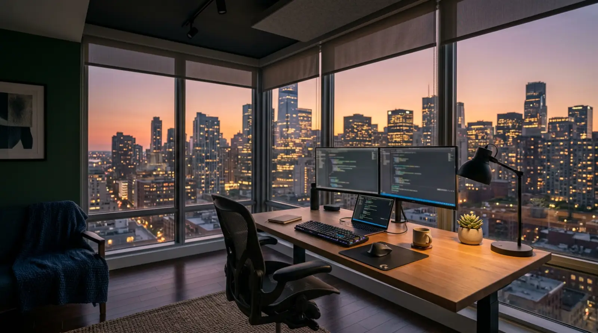

Bukie Digital Solutions
Websites, mobile apps and AI tools built for real users.
What we do
Software, data and design for how your business works.
-
Websites and online stores
Fast, responsive websites and e-commerce stores that work well on any phone. -
Mobile apps
iOS and Android apps, native or cross-platform with React Native and Flutter. -
AI tools and automation
AI tools and automated workflows that take over repetitive work.
Also available
-
Custom softwareApplications shaped around how your business runs.
-
UI/UX designClear, accessible interfaces and design systems.
-
Data analytics and dashboardsDashboards, reports and predictive models.
-
DatabasesDesign and tuning for MySQL, PostgreSQL, MongoDB and Redis.
-
Cloud and DevOpsDocker, Kubernetes and CI/CD on AWS, Google Cloud and Azure.
-
APIs and integrationsREST and GraphQL APIs, payments and third-party tools.
-
Security and QASecure sign-in, encryption and automated testing.
-
Consulting and code auditsTechnical advice and reviews of existing code.
-
Training and mentorshipHands-on support for development teams.
Who we are
About the founder
Solomon Ogar Bukie
CEO & Founder, Bukie Digital Solutions
Full Stack Developer and Digital Solutions Expert
Solomon is a full stack developer with experience across software development, data analysis and digital design. He founded Bukie Digital Solutions to help organisations improve their digital presence and run their operations better.
He starts every project with the business goals and the people who will use the product, works with technical teams and business owners alike, and keeps projects clear, on time and within budget.
Skills and tools
- Languages
- Python, JavaScript, Java, C++, SQL
- Frontend
- React, Angular, Vue.js
- Backend
- Node.js, Django, Flask
- Mobile
- Swift, Kotlin, React Native, Flutter
- Data
- Python (Pandas, NumPy), R, Power BI, Tableau
- Databases
- PostgreSQL, MySQL, MongoDB, Redis
- Cloud and DevOps
- AWS, Google Cloud, Azure, Docker, Kubernetes
- Design
- Figma, Adobe Creative Suite, Sketch
How we work
Four steps, agreed in writing and visible along the way.
01
Understand the problem and the users.
02
Agree scope, price and timeline in writing.
03
Build in small, visible steps you can test.
04
Launch, then support and improve.
What's next
Building and fine-tuning AI models on open-weight foundations for African businesses and users.
Ways to work with us
One project or an ongoing partnership.
Short-term projects
A clear scope, price and timeline for one product, feature or fix.
Long-term partnerships
Ongoing development, support and improvement as your business grows.
Have a project in mind?
Tell us what you need.
Contact
Talk to the founder directly.
- Emailbukiedigitalsolutions@gmail.com
- Phone and WhatsApp+234 706 484 4203